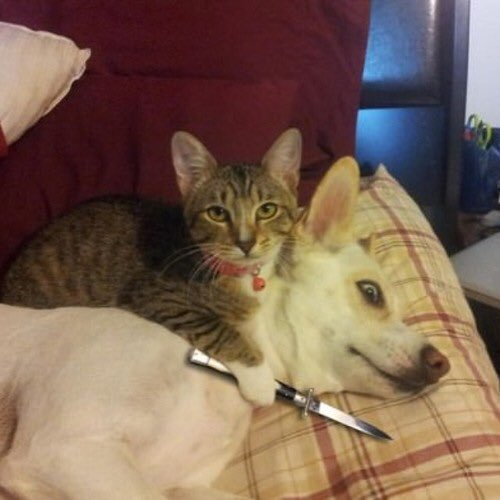

Blessed/Cursed Cats
Share the love for cats
5 motivos para ser catlover
- Conocen el significado de espacio personal.
- Son mentalmente estables.
- Te protegen de los malos vecinos.
- Son lo contrario a los perros policias.
- Te traen cadaveres de roedores como regalo.
Gatos en internet

¿Que nombres te gustan para los gatos?
Beneficios de adoptar gatos